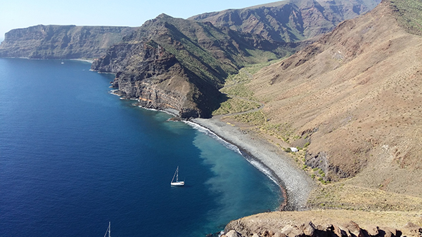
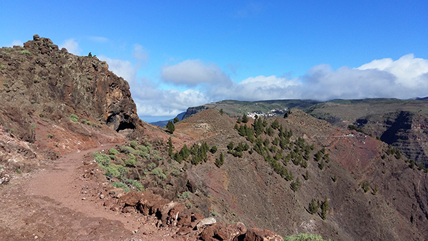

Aktiv auf La Gomera
Auf Wanderungen und unter Wasser

Nebelwälder, tiefe Schluchten, grüne Palmentäler und schroffe Felstürme aus Basalt. La Gomera ist für Wanderfans ein Ort, der eigentlich zu gut ist, um wahr zu sein. Die zweitkleinste der kanarischen Inseln vereint eine fast unglaubliche Vielfalt an Landschaften mit einem so dichten Netz an Wanderwegen, dass es für Naturliebhaber schlicht unmöglich ist, sich hier zu langweilen. Dazu kommen mildes Klima und eine hervorragende Infrastruktur auf europäischem Niveau ohne die negativen Seiten des Massentourismus.
Wandertouren zu Traumstränden
Valle Gran Rey im Südwesten ist der beliebteste Ferienort in La Gomera. Das wunderschöne, weitläufige Tal ist für seine grünen Terrassenfelder, Palmenhaine und bunten Obstgärten bekannt und es gibt hier auch ein paar Strände. Beliebte Wanderungen führen zum Wasserfall Salto de Agua im Barranco de Arure, über den Kirchenweg zum Hochtal La Matanza oder auf den Tafelberg La Fortaleza.

Bunte Unterwasserwelt
Tauchen Sie ein in eines der artenreichsten Gewässer Europas! Im Rahmen eines Halbtageskurses vermitteln wir Ihnen die notwendigen Fertigkeiten und Sie erhalten eine komplette ABC-Leihausrüstung inklusive Maske, Flossen, Anzug und Blei.
Und das können Sie sehen:
Gleich an der Hafenmauer tummeln sich die ersten Fischschwärme (Meeräschen, Barrakudas ...), territoriale Revierkämpfer
(Neon-Riffbarsche, Blennies) und wirbellose Tiere (Seesterne, Krebse).
Weitere Infos und Termine:
www.canarianfeeling.de